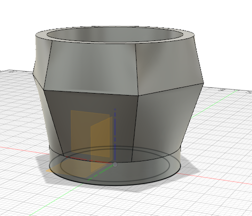

This week I learned how to use a 3D printer! I had watched a lot of cool guys on the internet use 3D printers before, but I had never touched one before Friday, and honestly I was pretty shocked at how easy it was.
The difference between CNC Routing and 3D Printing is like the difference between apples and soccer balls (that means very different). CNC Machines are a method of Subtractive manufacturing, which essensally means that you take material away while you work. When I use the CNC machine every time I press the little green button on the Shaper the drill head subtracts a piece of wood from my desk orginizer. The 3D printer on the other hand, is a form of additive manufacturing. Instead of taking material away, the 3D printer drops more material from a spool and lays it into the outcome I want.
Magic The Prusa Printer takes an input of a STL File on an SD card, and a spool of PLA Fillament. PLA stands for Polylactic Acid, and is a type of plastic that can be easily and realiably melted, and reconfigured.
The Prusa Printer itself is also super neat. It works by melting the PLA filament and pouring it into certain locations on the base board. The Prusa has a system of pullyeys to push the heating head to different locations on the X, Y, and Z axis depending on where it is in the print and what the job is from the STL.
If you remember from my time on The Shaper, I think Fusion360 is a terribly frustrating program that isn't user friendly at all. I hoped that after CNC Week was done I could kiss Fusion360 goodbye, but alas that was not the case. I started my design with a simple circle, and used the offset tool to create a smaller cirle within that circle so that the print would fit in the base that I totally cut into my orginizer base.
The next step was to extrude the shape out which was done by simply hitting the E button on my keyboard. This extrude function turned my 2D model into a 3D model, which means that I'll need a 3D printer to get a fancy output from this file. With the circle extruded it was time to start making something pot shaped, so I decided to place a hexagon 2" higher then my orginal on an offset plane, and another circle .5" above that.
The next step was probably my favorite becuase it was very easy, and still made something really cool. I used the loft function to connect the circles and the hexagon, into one pot shaped object. Lastly I had to add a hole for the plant to grow in: and then kaboom pot was created! Results are below, and to be honest I'm pretty pleased with my result! It didnt take too much work but it still looks pretty cool.
The last couple of steps were actually wicked straightforward. All I did was put the file into the Prusa Printing app, select all supports, make sure I had the correct PLA and printer selected, and hit export onto the SD card. I brought the SD card over to the printer, loaded my filament and hit print. I waited for 30 mins as the machine made multiple passes and my work started to take shape. The estimated time to finish was over 7 hours, so when I left, and when I came back I had a really cool pot! I wish there was more writing for me to do on this step but it really was as simple as pop my file into the Prusa Editor, add supports, and plug it into the machine. So simple even I could do it!
I couldnt add the code for my object to the website becuase the file was too large, but I emailed it to you earlier. Thank you!